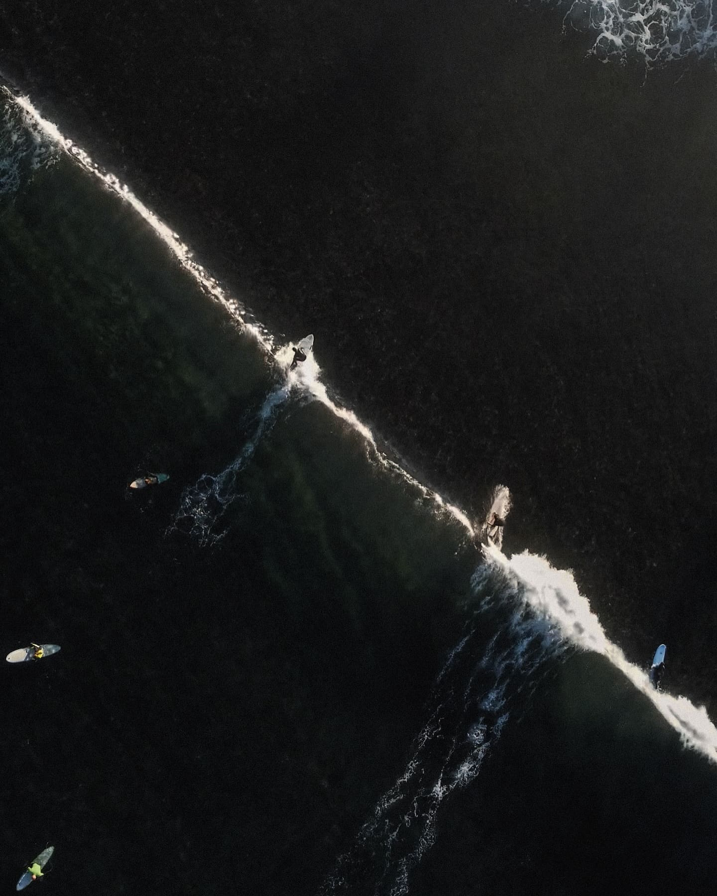

— In evidenza · Maggio
01
Tre cose che ho capito
Tre cose che ho capito
al primo allenamento.
La differenza non la fa il programma. La fa quanto ti dai il permesso di ascoltarti prima che qualcuno ti dica cosa fare. Una lettura di cinque minuti.